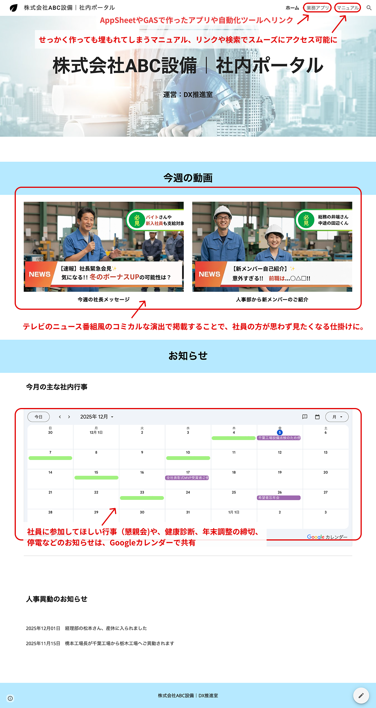

Google Workspaceの活用
AppSheetで開発したアプリ、GASで自動化したスプレッドシート、Google Formなど、社内に点在する業務ツールを一つのポータルサイトに集約することで、必要な情報やツールへのアクセスが格段に向上します。
Google Sitesなら、プログラミング不要で誰でも簡単に作成・更新でき、Google Workspaceとの連携も標準装備。
散らばった業務ツールを整理し、社内DXをさらに推進します。
活用イメージ｜社内ポータル
トップページには社長メッセージの動画を埋め込み。
テレビのニュース番組風のコミカルな演出で掲載することで、社員の方が思わず見たくなる仕掛けに。
堅苦しくなりがちな社内ポータルも、少しの遊び心で社内の士気を高めます。
